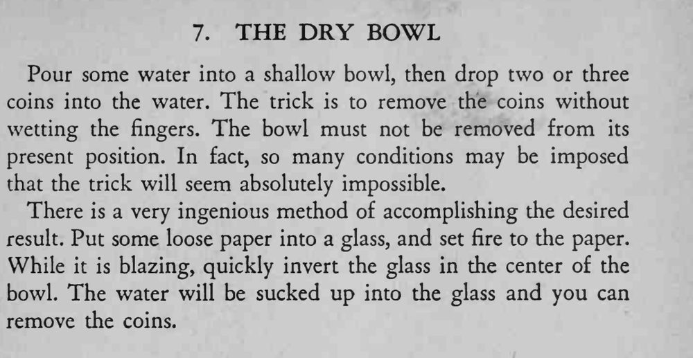

浅碗里盛水、水中落着硬币，魔术师不弄湿手指、也不移动碗，就把硬币全部取了出来。
先说明碗不能移动；倒扣要快，火别太大。

Pour some water into a shallow bowl, then drop two or three coins into the water. The trick is to remove the coins without wetting the fingers. The bowl must not be removed from its present position. In fact, so many conditions may be imposed that the trick will seem absolutely impossible. There is a very ingenious method of accomplishing the desired result. Put some loose paper into a glass, and set fire to the paper. While it is blazing, quickly invert the glass in the center of the bowl. The water will be sucked up into the glass and you can remove the coins.